IKEC De Zevensprong, Hoorn · Gerealiseerd 2025
Werkzaam aan dit project namens KRFT Fotografie © Stijn BollaertEen integraal kind- en expertisecentrum in Hoorn, ontworpen door KRFT. Michael werkte aan dit project als medewerker van KRFT.

Wonderwoods, Utrecht · Gerealiseerd 2024
Werkzaam aan dit project namens INBO BIM-modellering en technische uitwerking Fotografie © Giovanni NardiGroene woontoren in Utrecht van Stefano Boeri Architetti, met INBO als co-architect en engineer. Michaels bijdrage bij INBO: BIM-modellering en technische uitwerking.

MFC De Bloesem (De Wanmolen), Zetten · In uitvoering
Werkzaam aan dit project namens KRFT Technisch ontwerp en BIM-coördinatie Foto via De GelderlanderMultifunctioneel centrum in Zetten naar ontwerp van KRFT. Michael werkte bij KRFT aan het technisch ontwerp en de BIM-coördinatie.

RottaNova, Rotterdam · In uitvoering
Werkzaam aan dit project namens INBO BIM-modellering en technische uitwerking Visualisatie © ParallelTwee woontorens in Rotterdam naar ontwerp van Frits van Dongen Architecten, met engineering door INBO. Michael verzorgde bij INBO BIM-modellering en technische uitwerking.

Havenkade, Nijmegen · Gerealiseerd 2023
Werkzaam aan dit project namens INBO Fotografie © Aiste RakauskaiteWoongebouwen aan de Waalhaven in Nijmegen, ontworpen door JURY!, Thijs Asselbergs architectuurcentrale en Van Ommeren Architecten. Michael werkte aan dit project als medewerker van INBO.

Ivoordreef, Utrecht · In uitvoering
Werkzaam aan dit project namens INBO Bouwkundige uitwerking Visualisatie © MdB3DCirculaire woonbuurt in Utrecht naar ontwerp van JVST, met landschap van Dijk&co. Michael werkte bij INBO aan de bouwkundige uitwerking.
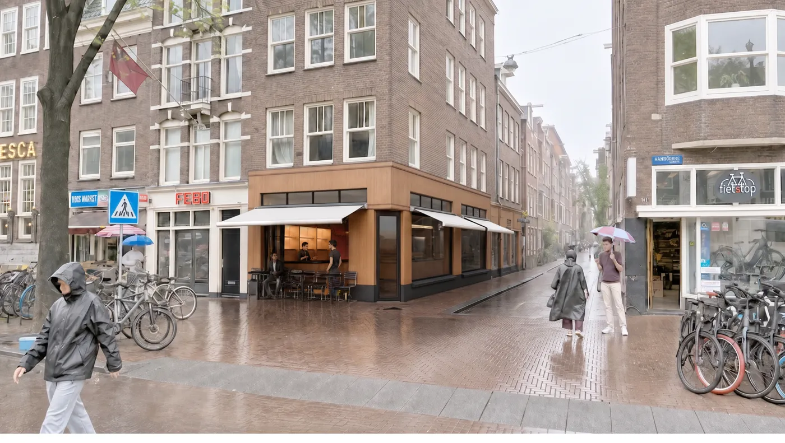
Rozengracht, Amsterdam
Rozengracht, Amsterdam · GevelvisualisatieOntwerp voor de transformatie van coffeeshop Flower Power aan de Rozengracht 139 in Amsterdam: interieur van begane grond en kelder, met restauratie van de gevel.
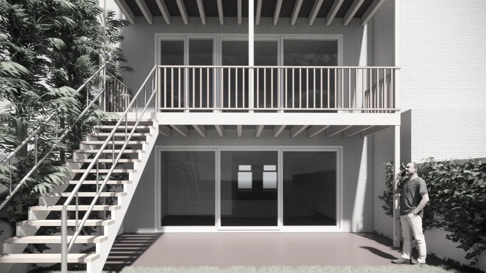
Gerard Doustraat, Amsterdam
Gerard Doustraat, Amsterdam · GevelvisualisatieGevelvisualisatie voor Gerard Doustraat in Amsterdam, als beeldstudie van de architectonische uitstraling.
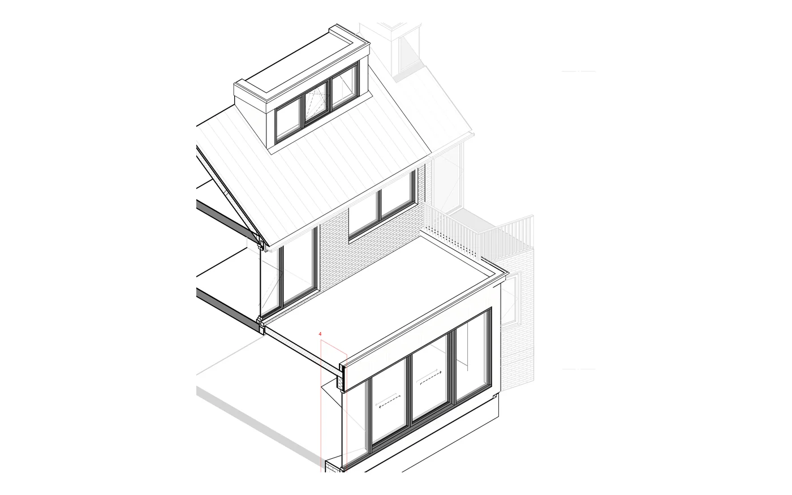
Wilhelminaplantsoen 69
Wilhelminaplantsoen 69 · Aanbouw en dakopbouwBouwkundige uitwerking van een aanbouw en dakopbouw, met tekeningen en aansluitdetails voor de uitbreiding van de bestaande woning.
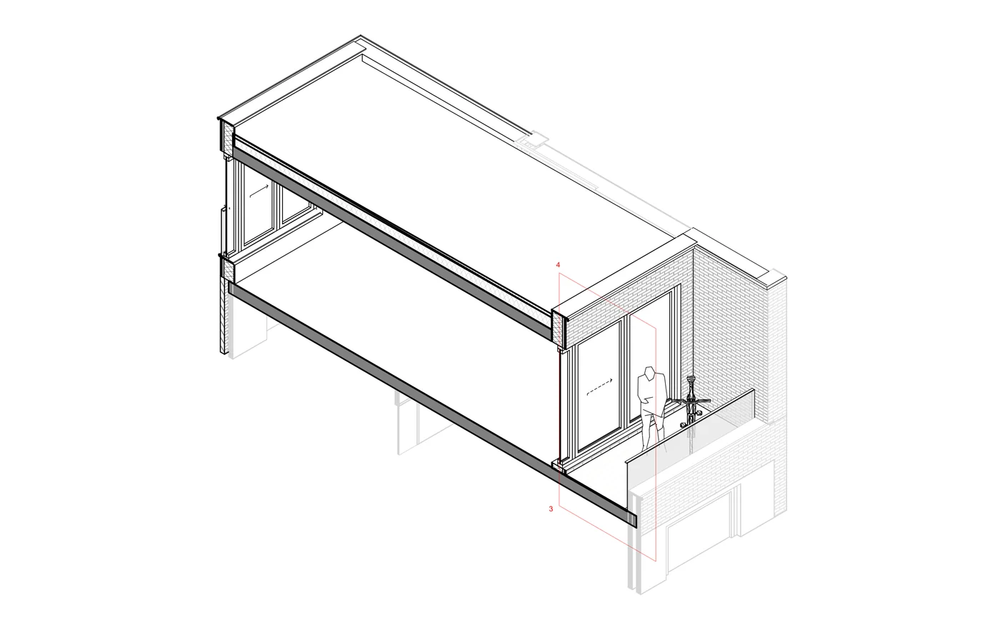
Bert Haanstrakade 428
Bert Haanstrakade 428 · DakopbouwBouwkundige uitwerking van een dakopbouw aan de Bert Haanstrakade, inclusief het balkon en de aansluiting op de bestaande woning.
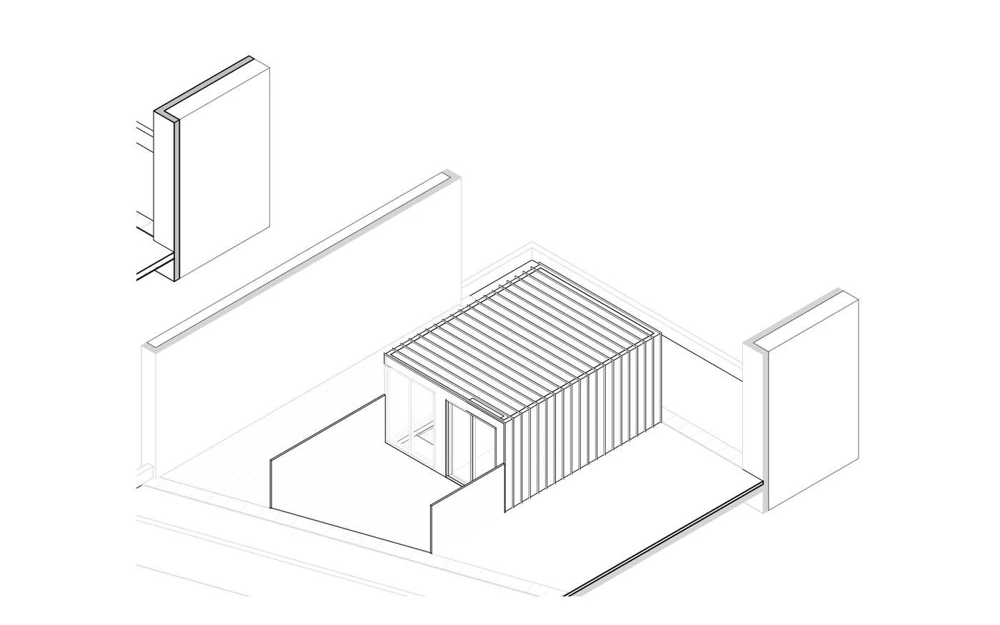
Westerdokdijk 567
Westerdokdijk 567 · TuinkamerUitwerking van een tuinkamer aan de Westerdokdijk, met gevelaanzichten en de aansluiting op het terras.
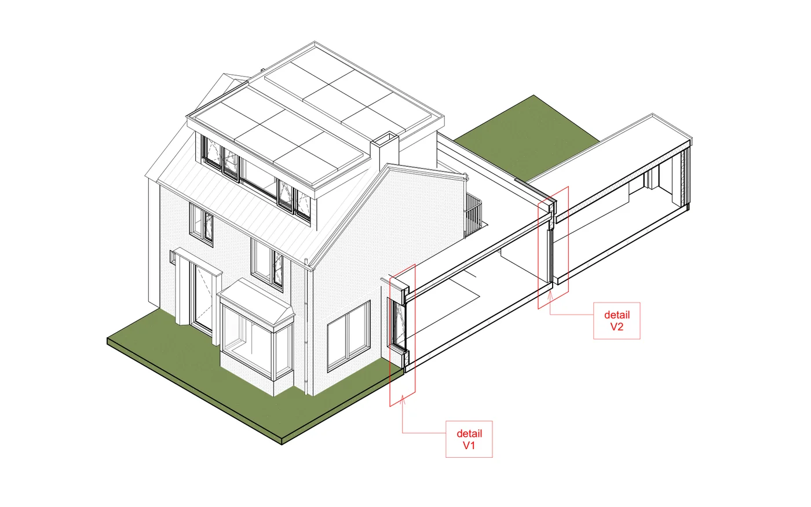
Wilhelminastraat 26
Wilhelminastraat 26 · WoninguitbreidingBouwkundige tekeningen voor een woninguitbreiding, met de bestaande en nieuwe situatie in één samenhangende set.
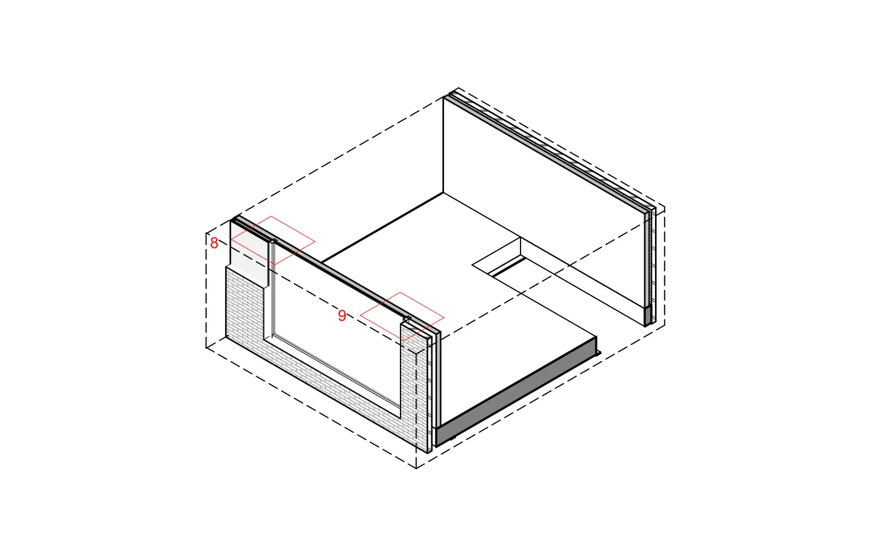
Egelskopstraat 1
Egelskopstraat 1 · Bouwkundige detailleringBouwkundige detaillering voor Egelskopstraat 1, met aandacht voor de aansluiting van de balustrade.
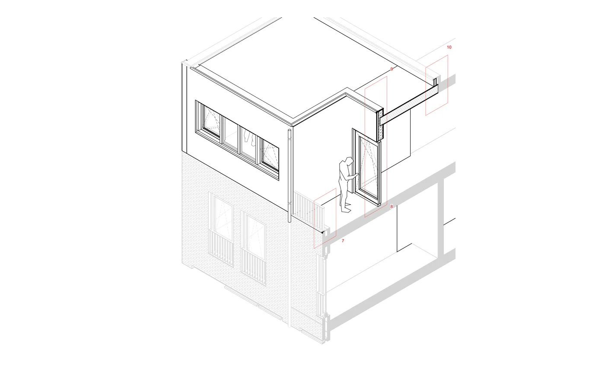
Zwanenbloemlaan 204–206
Zwanenbloemlaan 204–206 · DakuitbreidingBouwkundige uitwerking van dakuitbreidingen voor twee woningen aan de Zwanenbloemlaan in Amsterdam.
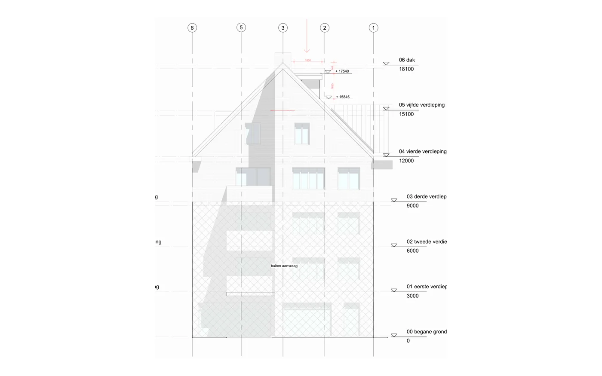
Rochussenstraat
Rochussenstraat · Bouwkundige uitwerkingBouwkundige uitwerking voor Rochussenstraat, vastgelegd in een set technische tekeningen.
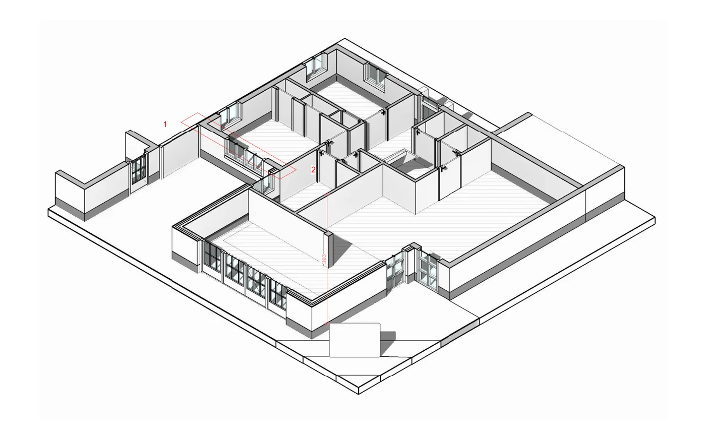
Meentweg 43
Meentweg 43 · Renovatie en verduurzamingUitwerking van renovatie en verduurzaming aan Meentweg 43, met spouwisolatie en aangepaste bouwkundige details.
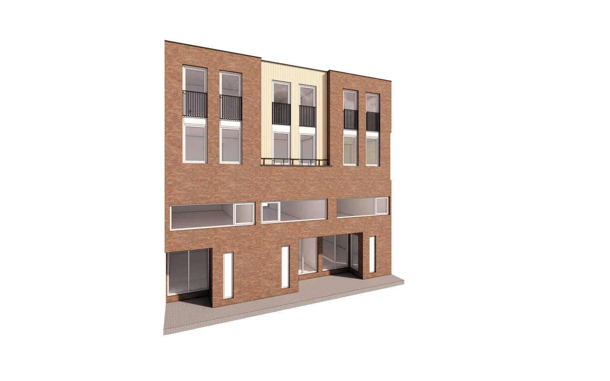
Zwanenbloemlaan 202
Zwanenbloemlaan 202 · WoninguitbreidingWoninguitbreiding aan de Zwanenbloemlaan in Amsterdam, uitgewerkt in bouwkundige tekeningen en een ruimtelijke visualisatie.
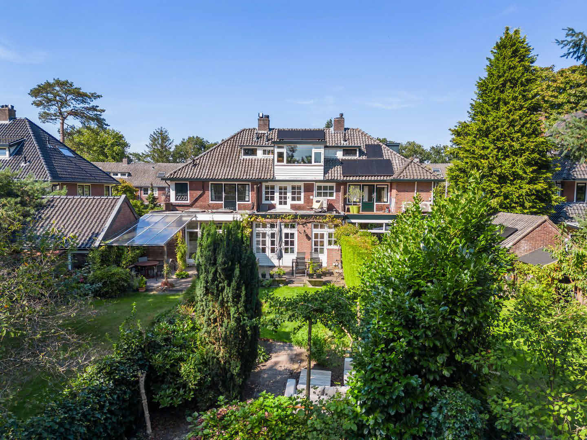
Paltzerweg 64
Paltzerweg 64 · Uitbouw achtergevelUitbouw aan de achtergevel, uitgewerkt in bouwkundige tekeningen en een visualisatie van de nieuwe buitenruimte.
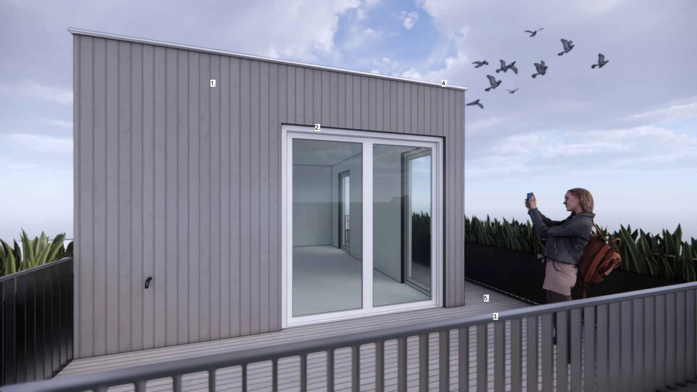
D.L. Hudigstraat 70, Amsterdam
D.L. Hudigstraat 70, Amsterdam · Dakopbouw · In samenwerking met JVAIDakopbouw aan D.L. Hudigstraat 70 in Amsterdam, met tekeningen en een visualisatie voor de omgevingsvergunning, in samenwerking met JVAI.
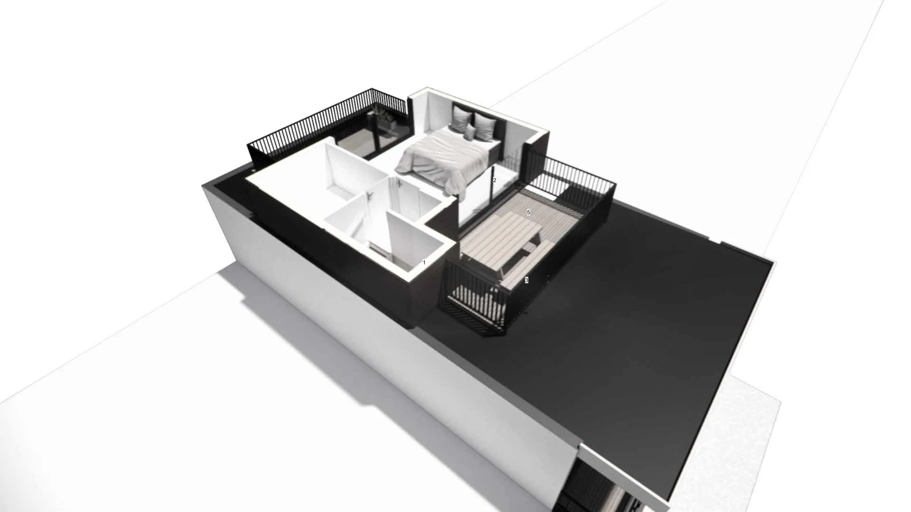
Hogeweg 28-3, Amsterdam
Hogeweg 28-3, Amsterdam · Dakuitbreiding · In samenwerking met JVAIDakuitbreiding aan Hogeweg 28-3 in Amsterdam, met plattegronden, doorsneden en principedetails voor de omgevingsvergunning, in samenwerking met JVAI.
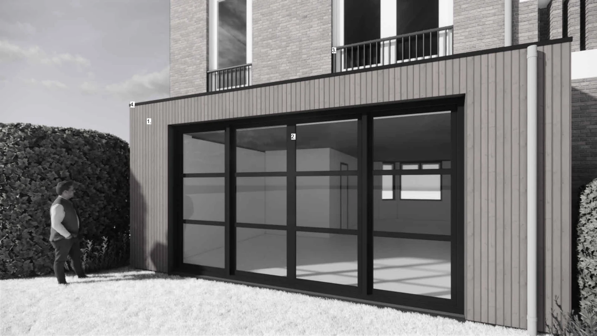
Smedemanplein 15, Amstelveen
Smedemanplein 15, Amstelveen · Woninguitbreiding · In samenwerking met JVAIWoninguitbreiding in Amstelveen, uitgewerkt in vergunningstekeningen en een gevelvisualisatie, in samenwerking met JVAI.
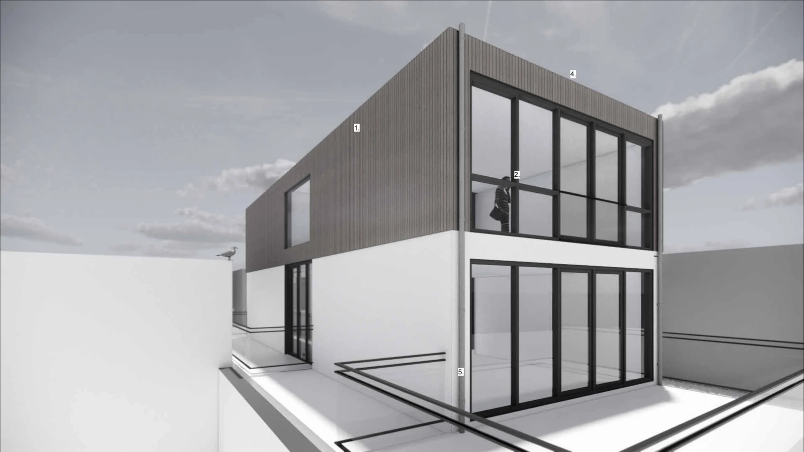
Lisdoddelaan 94b, Amsterdam
Lisdoddelaan 94b, Amsterdam · Woninguitbreiding · In samenwerking met JVAIWoninguitbreiding aan Lisdoddelaan 94b in Amsterdam, met gevels, plattegronden en een ruimtelijke visualisatie, in samenwerking met JVAI.
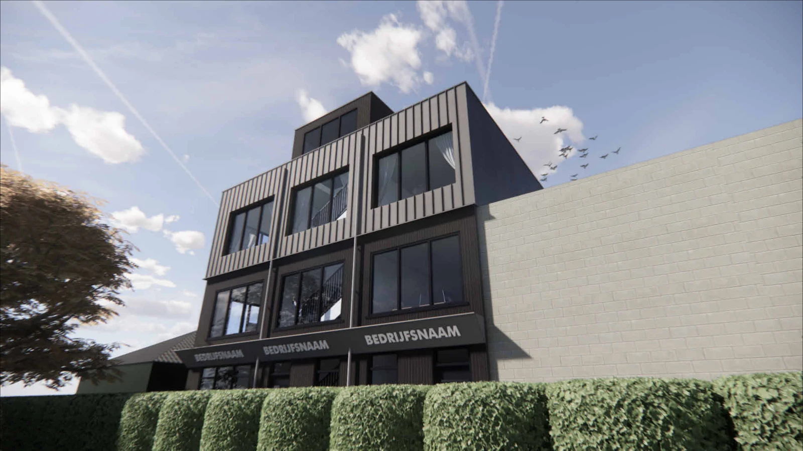
J.J. Allanstraat 172a, Westzaan
J.J. Allanstraat 172a, Westzaan · Transformatie en uitbreiding · In samenwerking met JVAITransformatie en uitbreiding in Westzaan, uitgewerkt in bouwkundige tekeningen en gevelvisualisaties, in samenwerking met JVAI.
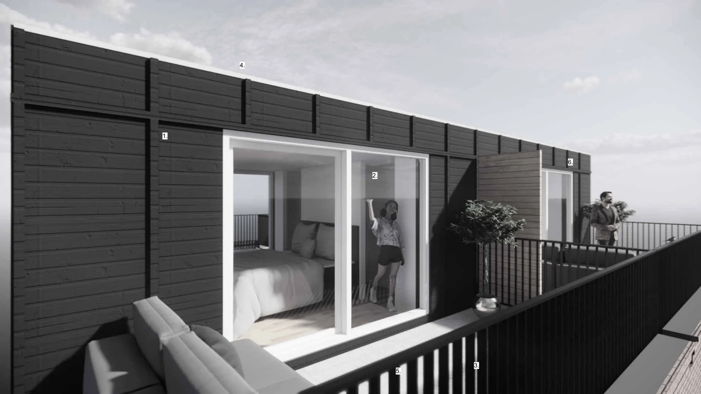
J.J.M. Vegterstraat 6–8, Amsterdam
J.J.M. Vegterstraat 6–8, Amsterdam · Dakuitbreiding · In samenwerking met JVAIDakuitbreidingen voor twee woningen in Amsterdam, met tekeningen en een visualisatie van de opbouw en het terras, in samenwerking met JVAI.
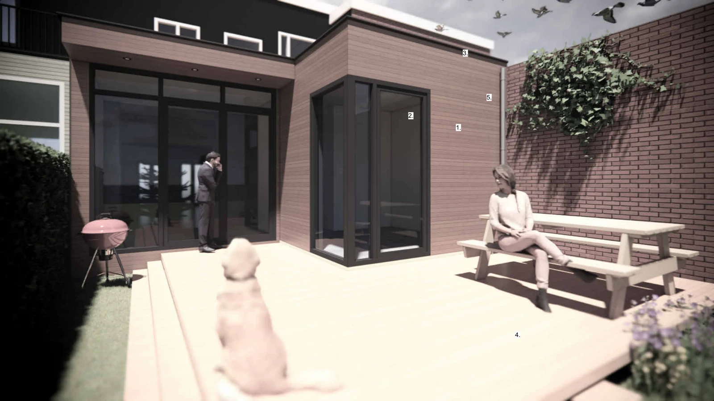
Rijksstraatweg 219, Duivendrecht
Rijksstraatweg 219, Duivendrecht · Uitbouw achtergevel · In samenwerking met JVAIUitbouw aan de achtergevel in Duivendrecht, met een definitief ontwerp, bouwkundige details en een visualisatie, in samenwerking met JVAI.
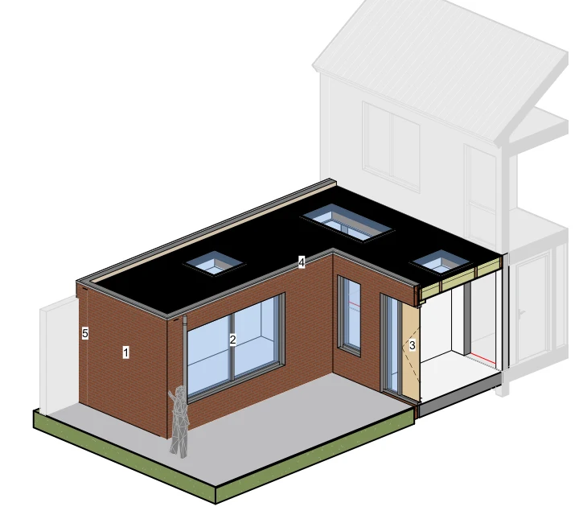
Midwoldastraat 11, Arnhem
Midwoldastraat 11, Arnhem · WoninguitbreidingWoninguitbreiding in Arnhem, uitgewerkt in vergunningstekeningen en details, met een ruimtelijke impressie van de uitbouw.
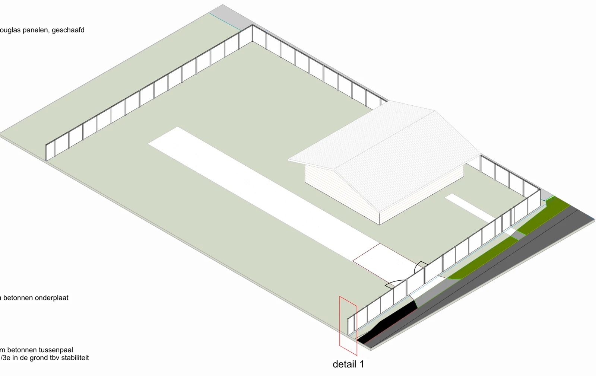
Paradijsweg 104, Ter Aar
Paradijsweg 104, Ter Aar · ErfafscheidingUitwerking van een erfafscheiding in Ter Aar, met aanzichten en een principedetail voor de omgevingsvergunning.
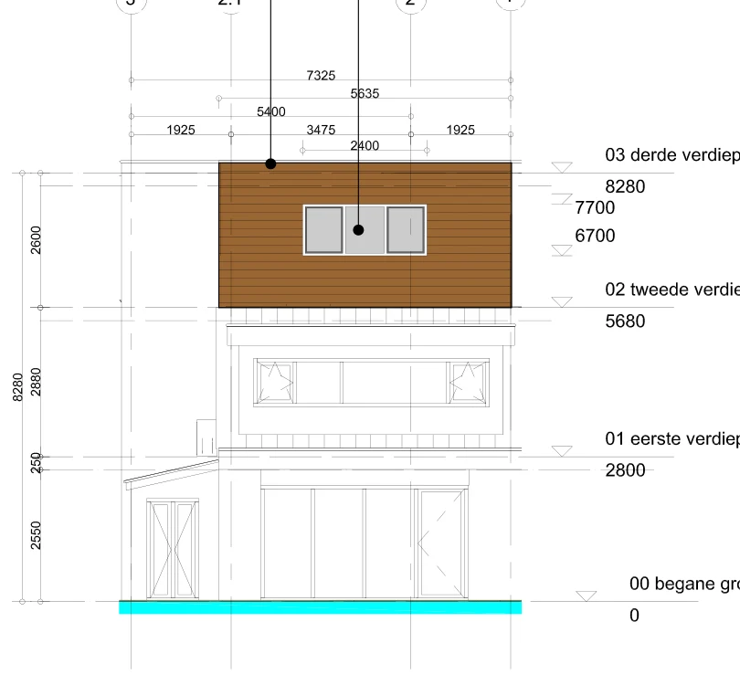
G.J. Wiefferingdreef 9, Weesp
G.J. Wiefferingdreef 9, Weesp · Dakopbouw · In samenwerking met JVAIDakopbouw in Weesp, met gevelaanzichten, doorsneden en details voor de aansluiting op de bestaande woning, in samenwerking met JVAI.
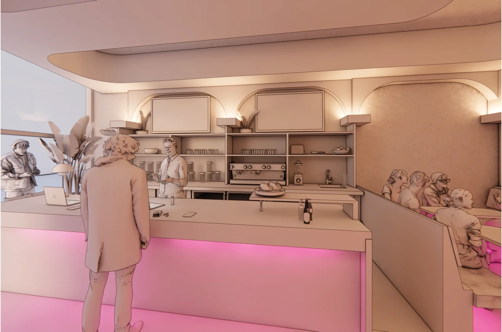
New Times, Amstelstraat 35, Amsterdam
Horeca/interieurWerkzaamheden: Ontwerp en technische uitwerking horeca.
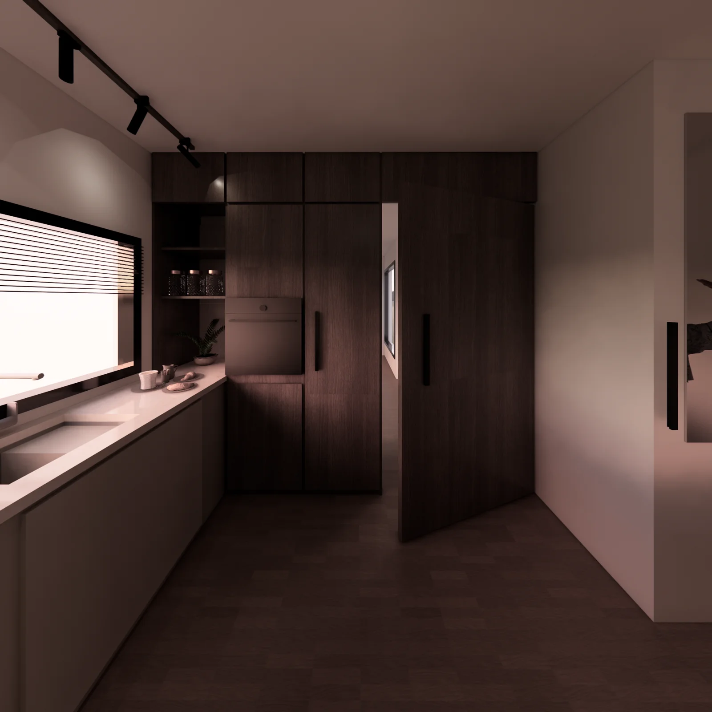
Mechelenstraat 10, Waalwijk
InterieurvisualisatieWerkzaamheden: 3D-modellen meubels en interieur, renders, feedback.

Zandpad 133, Breukelen
OntwerpstudieWerkzaamheden: Inventarisatie, drie schetsontwerp- en interieurvarianten, tekeningen en render.

Grote Lijster 16, Muiden
FietsbergingWerkzaamheden: Situatie, aanzichten, details, fotomontage en doorsnede.

Lijnbaan 63, Rotterdam
OmgevingsvergunningWerkzaamheden: Inventarisatie, gevelaanzicht, details, fotomontage en indiening.
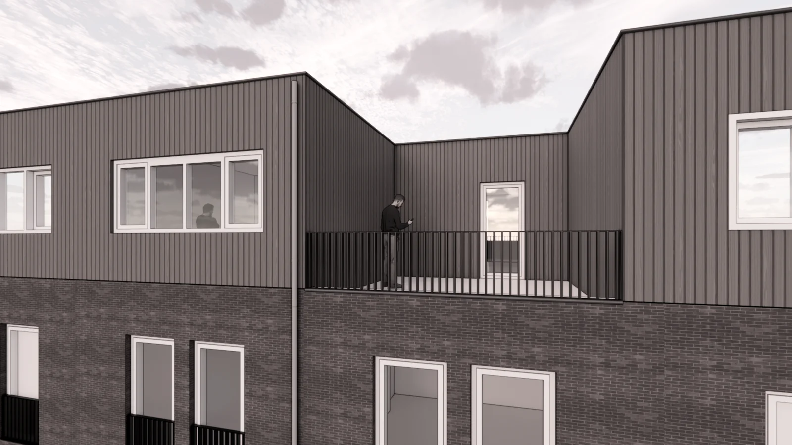
Zwanenbloemlaan 212, Amsterdam
WoningverbouwingIn samenwerking met JVAIWerkzaamheden: BIM, vergunningtekeningen en render.
Edward Masseystraat 12
WoningverbouwingIn samenwerking met JVAIWerkzaamheden: BIM, vergunningtekeningen en render.

Delfgaauwstraat 51 A/B/C
Woning / verkooptekeningenWerkzaamheden: Tekeningen, modellen en Funda-plattegronden.
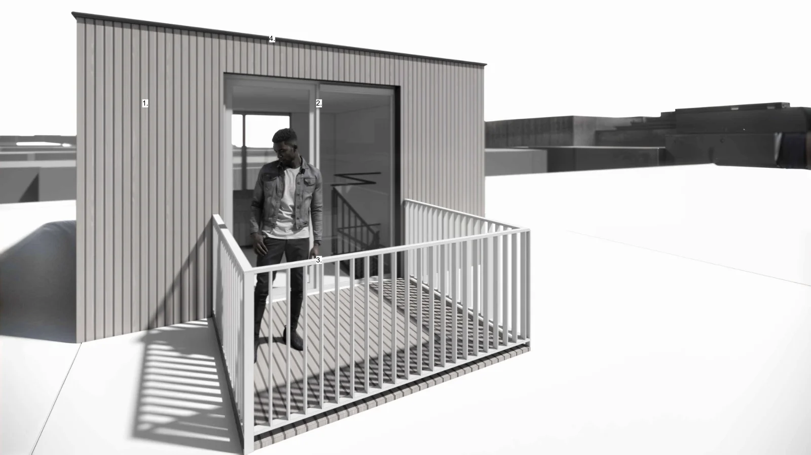
Vrolikstraat 401D, Amsterdam
WoningverbouwingIn samenwerking met JVAIWerkzaamheden: BIM, vergunningtekeningen, render en aanpassingen zonnepanelen.

Moerkerkestraat 43 A01/B01/B02
Splitsing / inmetenWerkzaamheden: Inmeten, BIM, splitsingstekening en BVO/GO.

Moerkerkestraat 45 A01/B01/B02
Splitsing / inmetenWerkzaamheden: Inmeten, BIM, splitsingstekening en BVO/GO.
Gevelisolatie bestaande woning
GevelisolatieWerkzaamheden: BIM, nieuwe gevelaanzichten en detail.

Smederij – schetsontwerp
OntwerpstudieWerkzaamheden: BIM bestaande/nieuwe situatie en drie ontwerpopties.

Swadenburgerdam 18–26
Ontwerp / tekenwerkWerkzaamheden: BIM bestaande/nieuwe situatie, principedetail en materialisatie.
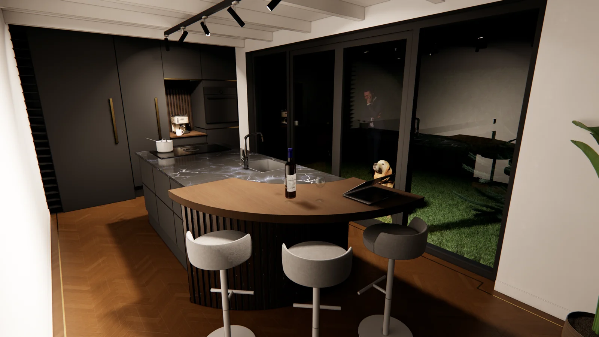
Keukenvisualisatie Boekel
InterieurvisualisatieWerkzaamheden: BIM, renders, materialisatie en feedback.
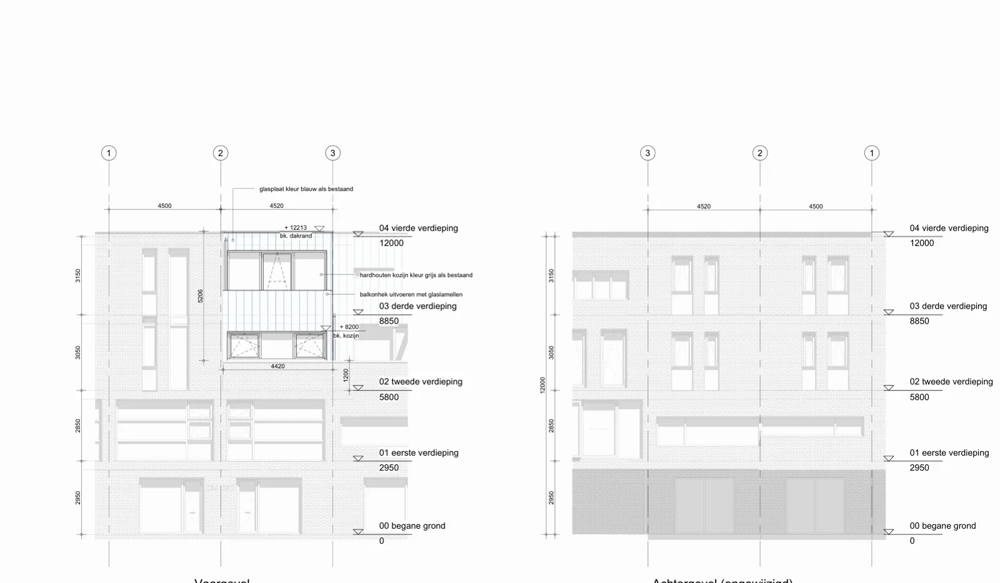
Zwanenbloemlaan 232, Amsterdam
WoningverbouwingIn samenwerking met JVAIWerkzaamheden: BIM, details, Bouwbesluit en render.
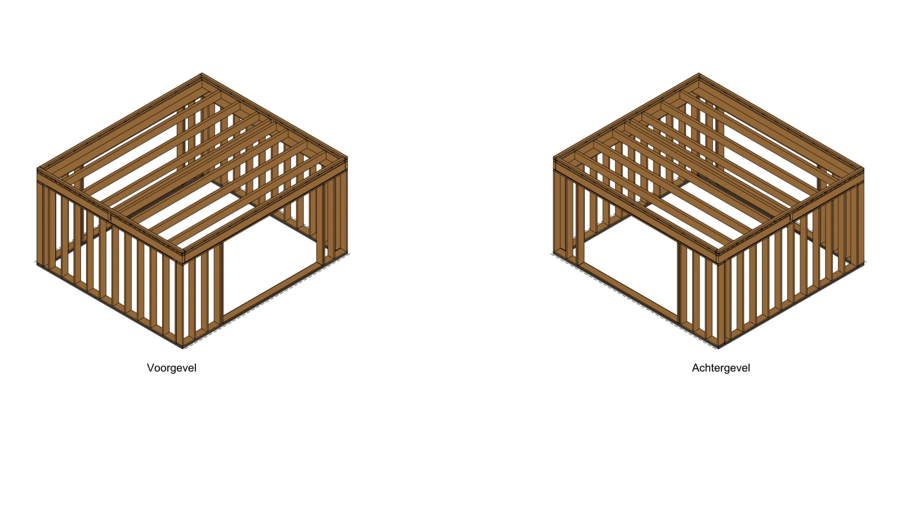
Ruyschstraat 343a, Amsterdam
HSB / dakopbouwWerkzaamheden: HSB-elementtekeningen voor uitvoering en prefabricage.
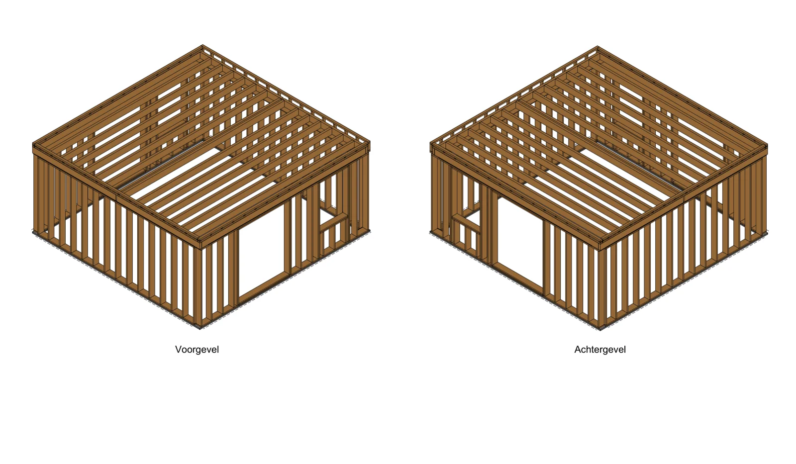
Derde Oosterparkstraat 198 / 198D, Amsterdam
HSB / dakopbouwWerkzaamheden: HSB-elementtekeningen voor uitvoering en prefabricage.
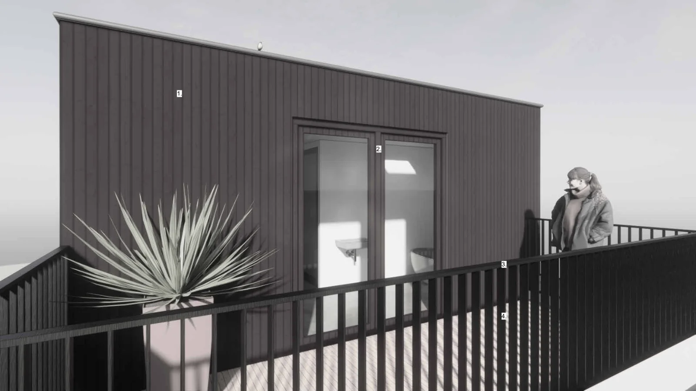
Koopvaardersplantsoen 87
WoningverbouwingIn samenwerking met JVAIWerkzaamheden: BIM, details, Bouwbesluit, render en aanpassing opbouw.
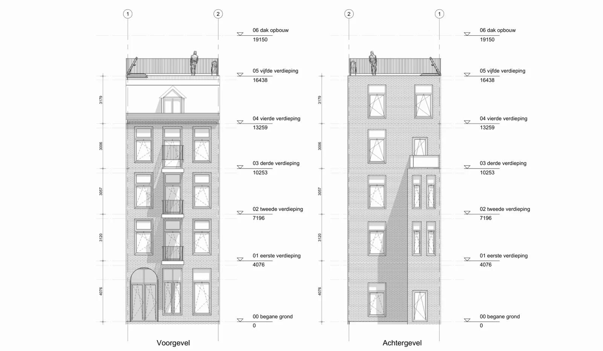
Kanaalstraat 106-3
Dakhuis / dakopbouwIn samenwerking met JVAIWerkzaamheden: BIM, details, Bouwbesluit en render.
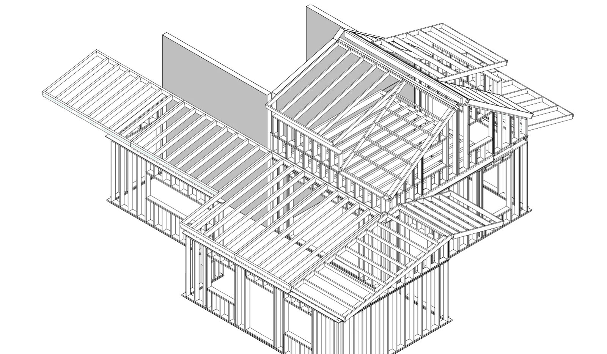
Nuovaweg 2, Alphen aan de Rijn
HSB / woninguitbreidingWerkzaamheden: HSB-elementen voor drie aanbouwen, opbouw en twee dakkapellen.

Fritz Dietrich Kahlenbergstraat 11b, Amsterdam
Woningverbouwing / HSBIn samenwerking met JVAIWerkzaamheden: BIM, details, Bouwbesluit, render en HSB-elementtekeningen.

Rijksstraatweg – HSB-aanbouw en tuinhuis, Duivendrecht
HSB / aanbouw en tuinhuisWerkzaamheden: HSB-elementtekeningen voor uitvoering.
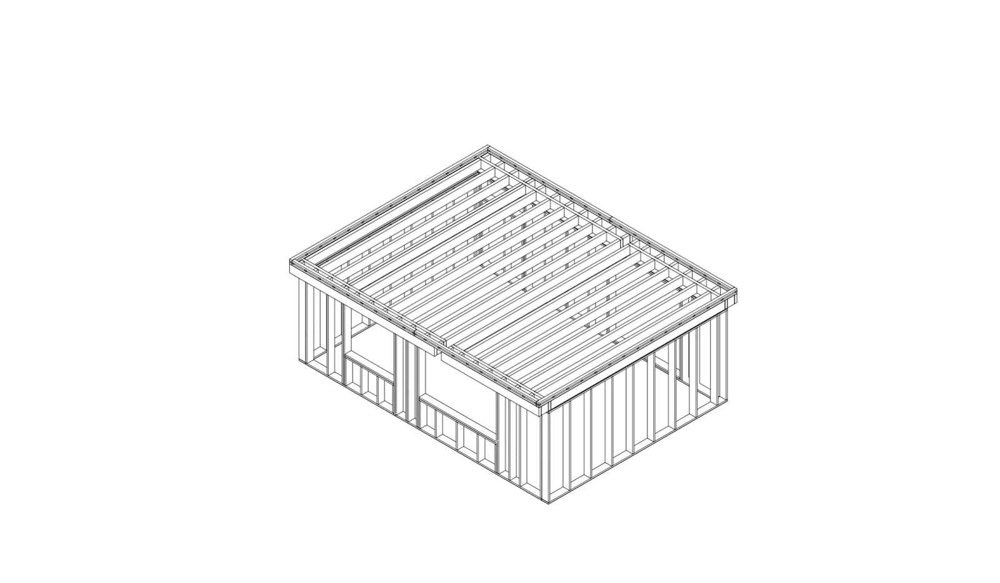
Willem Walravenhove 66, Nieuwegein
HSB / dakopbouwWerkzaamheden: HSB-elementtekeningen voor uitvoering.
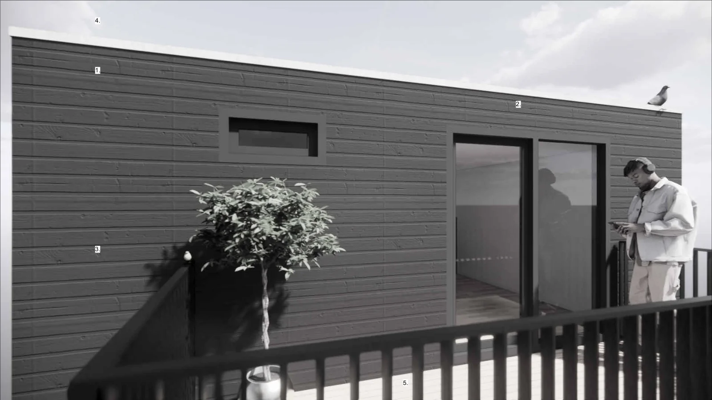
Zacharias Jansestraat 32-3
WoningverbouwingIn samenwerking met JVAIWerkzaamheden: BIM, details, Bouwbesluit en render.
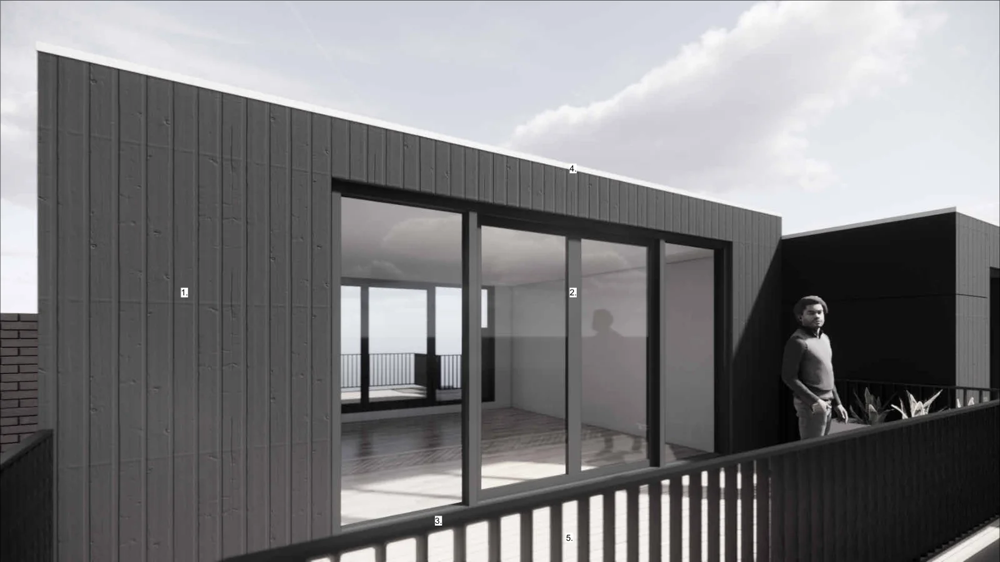
Tilanusstraat 45-IV
WoningverbouwingIn samenwerking met JVAIWerkzaamheden: BIM, details, Bouwbesluit en render.
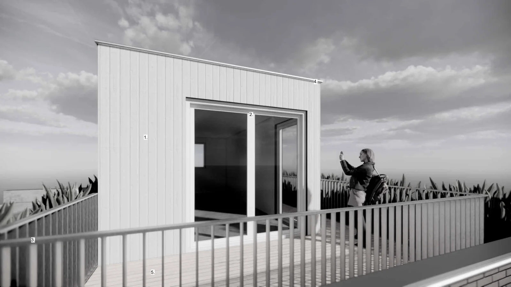
Hudigstraat 74
WoningverbouwingIn samenwerking met JVAIWerkzaamheden: BIM, details, Bouwbesluit, render en ontwerpaanpassing.
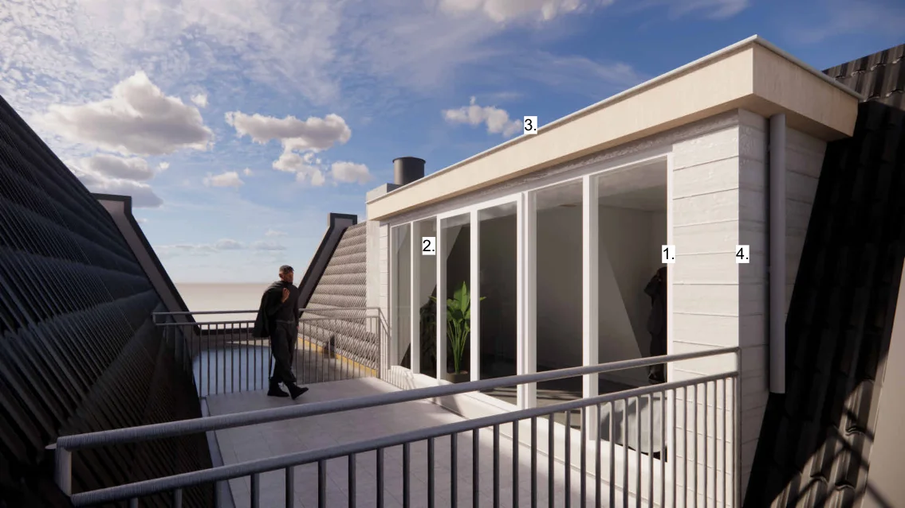
Brouwersgracht 905, Amsterdam
WoningverbouwingIn samenwerking met JVAIWerkzaamheden: Digitaliseren, BIM en ontwerpaanpassingen.
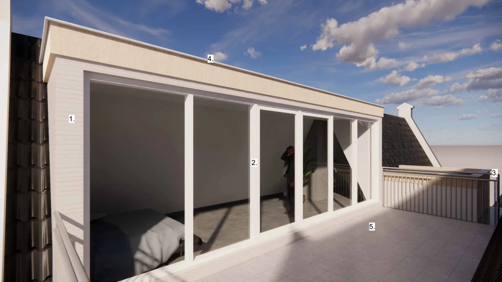
Brouwersgracht 847, Amsterdam
WoningverbouwingIn samenwerking met JVAIWerkzaamheden: BIM, details, Bouwbesluit en render.
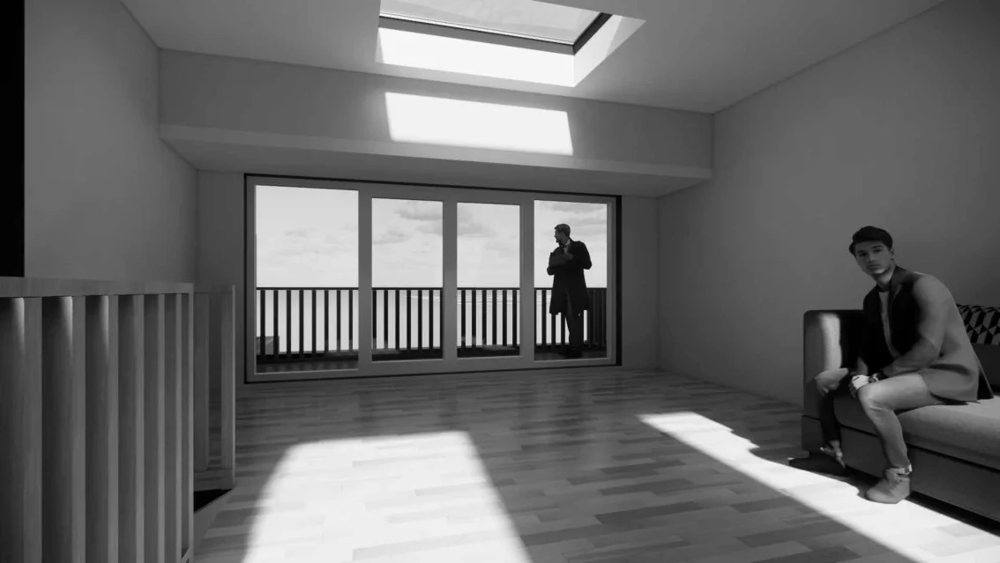
Pythagorasstraat 83-1
WoningverbouwingIn samenwerking met JVAIWerkzaamheden: BIM, vergunningtekeningen, zichtlijnen, details en materialisatie.
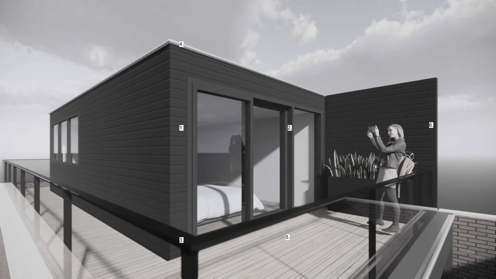
Blauwpijpstraat 33
DakopbouwIn samenwerking met JVAIWerkzaamheden: BIM, details, Bouwbesluit en render.
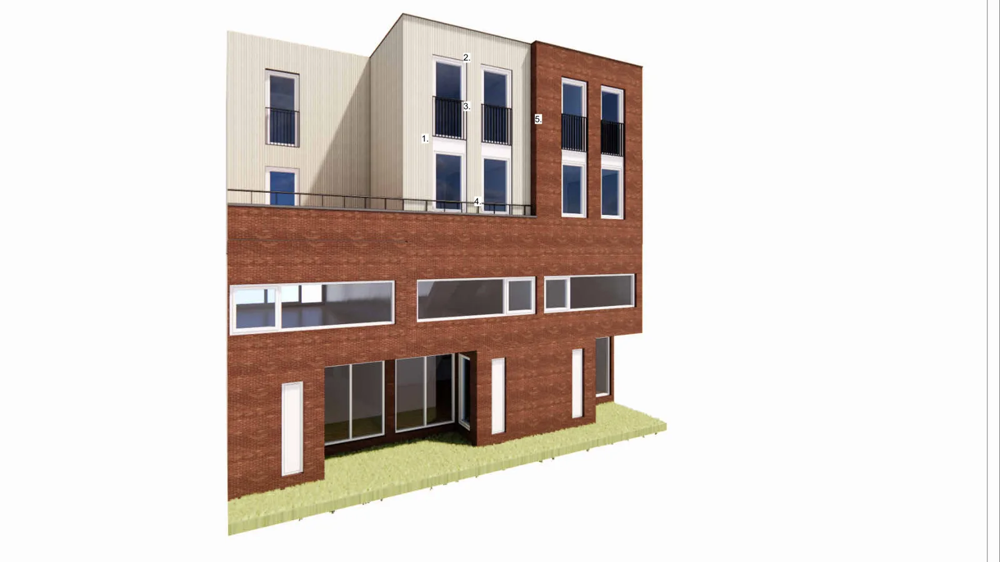
Zwanenbloemlaan 208, Amsterdam
WoningverbouwingIn samenwerking met JVAIWerkzaamheden: BIM, details, Bouwbesluit en render.
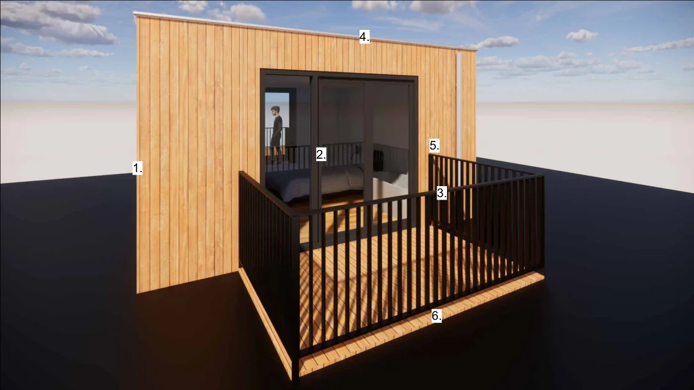
Vrolikstraat 277-4, Amsterdam
WoningverbouwingIn samenwerking met JVAIWerkzaamheden: BIM, details, Bouwbesluit en render.

Govert Flinckstraat 168E, Amsterdam
WoningverbouwingIn samenwerking met JVAIWerkzaamheden: BIM, details, Bouwbesluit en zichtlijnen.

Jacob de Graeflaan 127
WoningverbouwingIn samenwerking met JVAIWerkzaamheden: Digitaliseren, BIM, vergunningtekeningen en Bouwbesluit.

Agricolastraat 152, Wijk bij Duurstede
WoningverbouwingIn samenwerking met BMA OntwerpersOntwerp © Peter Bergboer · BMA OntwerpersWerkzaamheden: BIM bestaande situatie en schetsontwerp.

Faunalaan 42, Driebergen
WoningverbouwingIn samenwerking met BMA OntwerpersOntwerp © Peter Bergboer · BMA OntwerpersWerkzaamheden: BIM bestaande situatie en schetsontwerp.

Bachlaan 45, Veenendaal
WoningverbouwingIn samenwerking met BMA OntwerpersOntwerp © Peter Bergboer · BMA OntwerpersWerkzaamheden: BIM bestaande/nieuwe situatie en render.
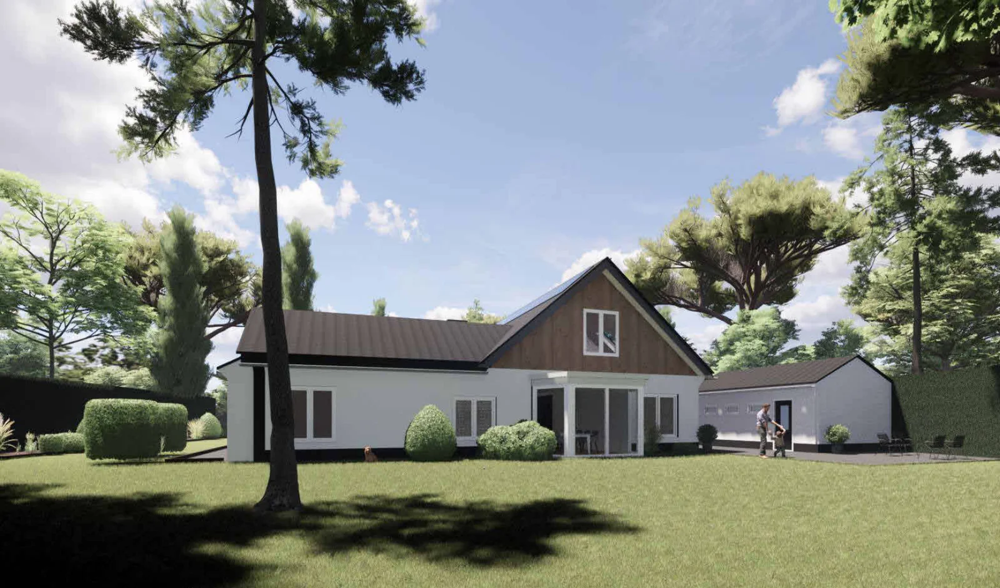
Van der Leelaan 18, Doorn
WoningverbouwingIn samenwerking met BMA OntwerpersOntwerp © Peter Bergboer · BMA OntwerpersWerkzaamheden: BIM bestaande/nieuwe situatie en render.
Doornenburg 5, Veenendaal
WoningverbouwingIn samenwerking met BMA OntwerpersWerkzaamheden: BIM nieuwe situatie en render.

Pleinesbos 65, Vleuten
WoningverbouwingIn samenwerking met BMA OntwerpersOntwerp © Peter Bergboer · BMA OntwerpersWerkzaamheden: BIM bestaande/nieuwe situatie en render.
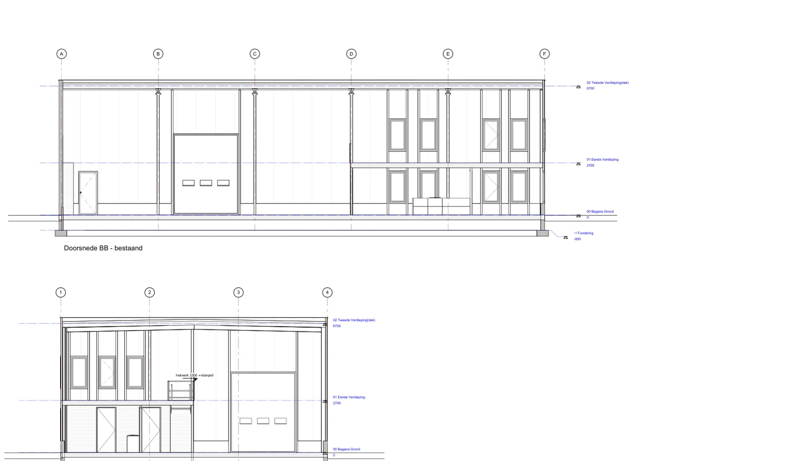
Marsjes 18, Hellendoorn
BIM / woningontwerpIn samenwerking met BMA OntwerpersOntwerp © Peter Bergboer · BMA OntwerpersWerkzaamheden: BIM bestaande situatie.
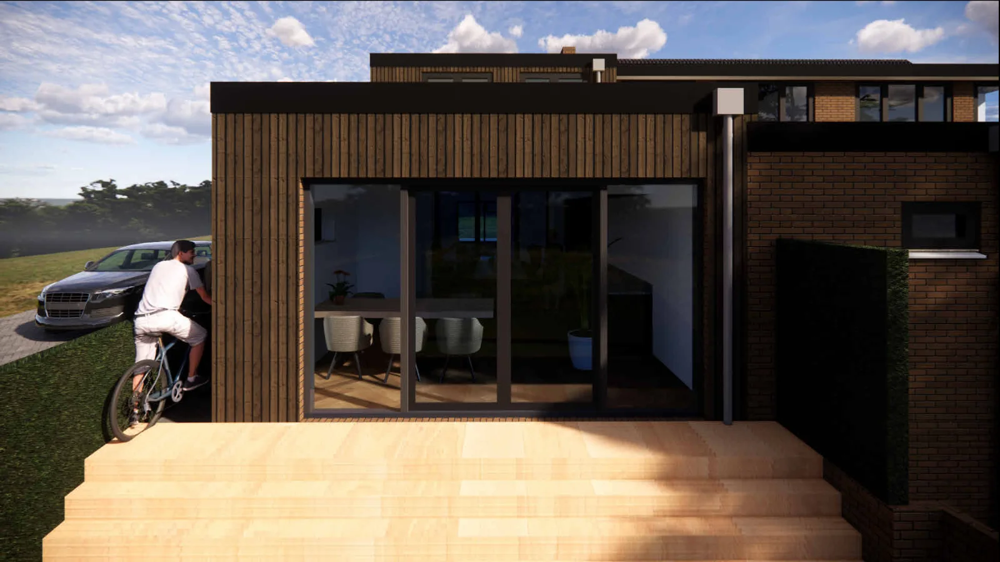
Cuneralaan 34, Rhenen
WoningverbouwingIn samenwerking met BMA OntwerpersOntwerp © Peter Bergboer · BMA OntwerpersWerkzaamheden: Bestemmingsonderzoek, BIM, SO/VO, vergunning, daglicht/ventilatie en renders.
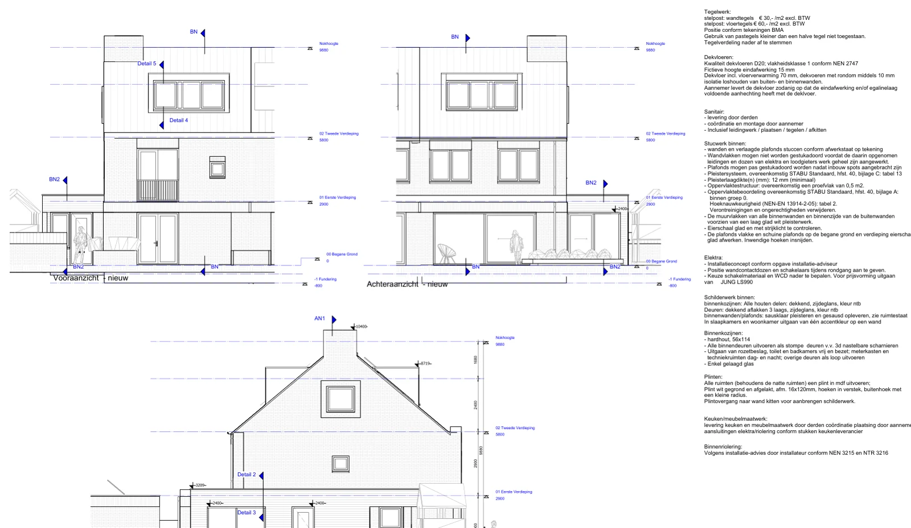
Debussystraat 39, Amersfoort
WoningverbouwingIn samenwerking met BMA OntwerpersOntwerp © Peter Bergboer · BMA OntwerpersWerkzaamheden: BIM bestaande situatie, SO en renders.
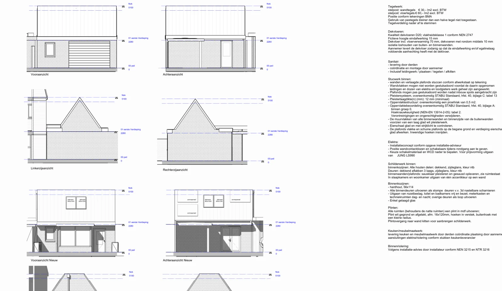
Hobbemastraat 27, Amersfoort
WoningverbouwingIn samenwerking met BMA OntwerpersOntwerp © Peter Bergboer · BMA OntwerpersWerkzaamheden: BIM, SO/VO, mansardekap en renders.
Nudepark, Wageningen
Bouwkundige uitwerkingIn samenwerking met BMA OntwerpersWerkzaamheden: Details.

Statenhof — voormalig V&D, Dordrecht
Transformatie en woningbouwWerkzaam aan dit project namens INBOProjectbeeld Statenhof · Bron: Nieuwbouw Dordrecht · Bekijk bron ↗Herontwikkeling van het voormalige V&D-pand in het centrum van Dordrecht tot een combinatie van wonen, werken en winkelen. Michael werkte namens INBO aan de omgevingsvergunning, woningbouw en commerciële functies.

Heijmans WoonConcept
Conceptuele woningbouwWerkzaam aan dit project namens INBOReferentiebeeld Heijmans Huismerk, Hoog Dalem · Bron: Heijmans · Bekijk bron ↗Werkzaamheden namens INBO aan meerdere projecten binnen Heijmans WoonConcept: omgevingsvergunning, technisch ontwerp en uitvoeringsgereed ontwerp. Het Huismerk-beeld dient als referentie voor conceptuele woningbouw.
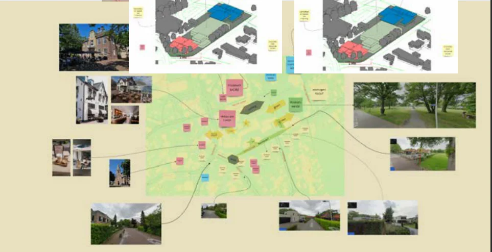
Multifunctionele accommodatie Gorssel
Tender / onderwijsWerkzaam aan dit project namens KRFTProjectbeeld KRFT · Bijdrage Michael van GeeneBij KRFT werkte Michael aan dit project: Onderzoek en ruimtelijke herconfiguratie van programma.
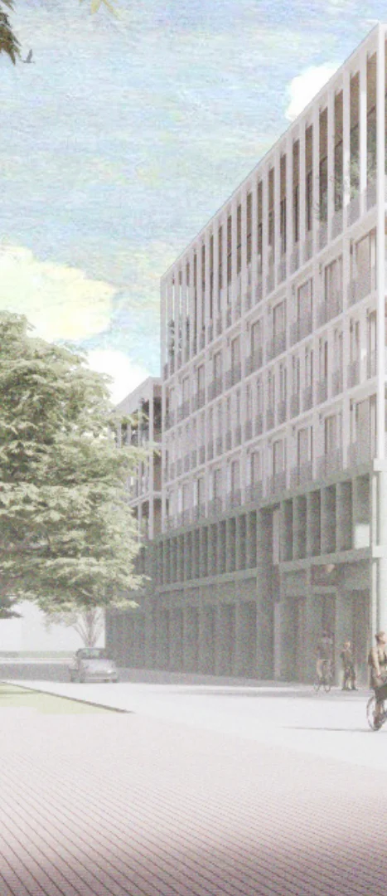
Het Baken – Cruquius, Amsterdam
Tender / woningbouwWerkzaam aan dit project namens KRFTProjectbeeld KRFT · Bijdrage Michael van GeeneBij KRFT werkte Michael aan dit project: Stedenbouw, plattegronden, diagrammen, maquette en visualisaties.
Wisselspoor / DaalCentraal, Utrecht
Tender / stedenbouwWerkzaam aan dit project namens KRFTProjectbeeld KRFT · Bijdrage Michael van GeeneBij KRFT werkte Michael aan dit project: Gevelontwerp, stedelijke functies, diagrammen en axonometrieën.
Tiny house, Eindhoven
Compact wonenTechnische uitwerking van een tiny house met hergebruikte containers: plattegronden, gevels, constructieve aansluitingen en een Bouwbesluittoets.
KC Zijdelwaard, Uithoorn
KindcentrumWerkzaam aan dit project namens KRFTProjectbeeld KRFT · Bijdrage Michael van GeeneKindcentrum met onderwijs, kinderopvang en jeugdvoorzieningen. Michael werkte bij KRFT aan ontwerp, geveluitwerking en BIM-coördinatie.

Hogeweg 38-3, Amsterdam
DakopbouwIn samenwerking met JVAIBouwkundige modellering en vergunningtekeningen voor een dakopbouw aan Hogeweg 38-3 in Amsterdam, in samenwerking met JVAI.

De Roskam 30, Ulvenhout
TrapverbouwingIn samenwerking met JVAIBouwkundige uitwerking van een trapverbouwing in Ulvenhout, met plattegronden, doorsneden en een isometrisch model, in samenwerking met JVAI.

Victoriatoren, Eindhoven
BIM en technische uitwerkingWerkzaam aan dit project namens INBOBIM-model en bouwkundige uitwerking namens INBOBouwkundige uitwerking van blok C voor het vergunningstraject, met BIM-modellering en aanpassing van het bouwsysteem. Michael werkte aan dit project als medewerker van INBO.
Tilburg
Tilburg · InterieurvisualisatieInterieurvisualisatie in Tilburg: een studie van materiaal, licht en sfeer rond een keuken met houten kasten en een donkere werkbank.